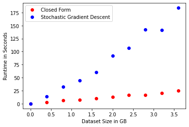
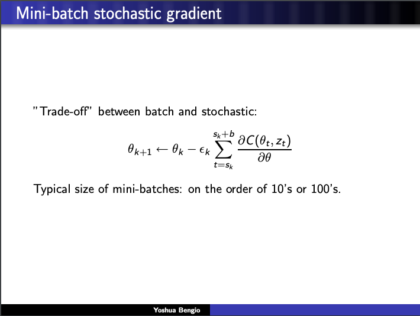
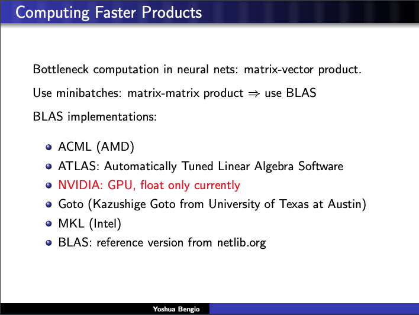
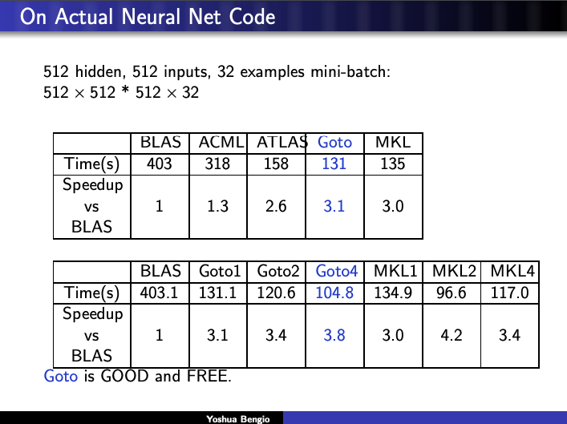

Rediscovering Mid-2000s Deep Learning Techniques (Linear Regression III)
Written by Steven Chun
Published on 27 September 2020
So far, we’ve:
- Derived the closed form solution for multivariate ordinary least squares.
- Mused about BLAS and LAPACK and the importance ofAll together now! vectorization, data movement, and parallelization.
UnintentionallyIf these posts seem to be loosely related at best, that is because absolutely zero planning went into them. ¯\(ツ)/¯ , this series has become less about fiddling with linear regression and more about equipping ourselves with the knowledge to make educated guesses about the interaction between method and machine. We know that ordinary least squares boils down to some linear algebra that can be efficiently performed by LAPACK/BLAS. We know that generally the more we vectorize and parallelize, the faster we go. We learned that data movement across the memory hierarchy can often be the bottleneck; we also learned that sort of optimization is hard and tedious and we should very much hope machines get better at it.
Now, I haven’t really demonstrated why one should know these things. While casting around for another post idea, I think I landed on an excellent demonstration. Let’s rediscover some mid-2000s deep learning stuff.
Everything is Gradient Descent
A while ago, a friend of mine who works at $prestigious_tech_company heard someone talking about a regression and went, “…so you would use gradient descent for that, right?”. Now, I want to be clear. You totally can use whatever numerical method you want to solve least squares. I have no use for proselytizing. It is curious, however, that gradient descent might be the first to come to mind. I blame about a decade of Medium articles for making gradient descent and the vague outline of machine learning a kind of low-level shared cultural knowledge among software engineers. In the same way the language of epidemiology—r-naught, viral load, herd immunity—has become commonplace during the Coronavirus pandemic and so enabled lots of bad Dunning-Kruger takes, so has the hype/money machine around ML given us the language to say silly things about statisticsI mean, look at me, writing this blog. I should NOT be doing this. .
Maybe gradient descent is a good idea. I don’t know. There are some cases, like when your dataset won’t fit into memory, where numerical methods can be a reasonable choice. Now, normal “batch” gradient descent We’re going to assume a working understanding of gradient descent from here on. I, for one, will not burden the world with another gradient descent explainer. requires computing the gradient only after processing the entire dataset, so that doesn’t alleviate our memory problems and is rarely done. In the memory-advantage case, people often are referring to stochastic gradient descent (SGD) which computes a gradient for a random example in the dataset, which means you only have to have a single example in memory, but the direction of the gradient might not be perfect.
Let’s get a sense for SGD vs. closed-form least squares for some increasingly large datasets. Our goal here is to think about this in terms of, say it with me, vectorization, data movement, and parallelization.
For this, I’ve used the LinearRegression model and the SGDRegressor, both from Scikit-learn. In one sense, this comparison is incredibly sensitive to the hyperparameters supplied to SGDRegressor. In another sense, if you’re using Scikit-learn for your very important regression problem, neither you or I should be trusted to fiddle with learning rates, so the defaults will do.
Our dataset will have 10 features plus a bias, some noise, and we’ll just keep making it larger until we melt our Colab.

I’m getting these results on a Google Colab instance, which has like 12gb of RAM Eagle eyed readers might spot that the largest dataset is only ~3.5gb, while Colab indicates the available RAM is 12gb. I’m not sure why this is, but I’m sure that whenever I try to alloc anything more than 4gb, Colab is displeased. , which is to say, 50% more than your 2015 Macbook ever needed. So, if you’re still using a laptop for data analysis, this is for you.
If we ignore everything we’ve just talked about, it’s kind of nuts that solving OLS is sublinear in the size of the data we’re fitting. I’d think that minimizing the L2 normFancy word walking in. L2 Norm just means Euclidean distance. for each data point would have to be at least linear, which is exactly what SGD appears to be.
Speeding Up Stochastic Gradient Descent
Try to answer these questions:
- What is the bottleneck in Stochastic Gradient Descent? And how many times do we run into that bottleneck?
- What is (at a hand wavy level) the bottleneck in computing the closed form solution for Ordinary Least Squares? And how many times do we run into that bottleneck?
The answer for the first is vector vector multiplication: a 1D vector of weights times a 1D vector of the chosen example. And this happens many times—potentially unbounded!
For the second, it’s matrix matrix multiplication (mostly…for solving the normal equations there’s some matrix factoring going on but we’re going to file this under “matrix things LAPACK can handle”, so matrix multiplication). And this happens exactly once.
Matrix matrix multiplication is obviously way more floating point operations (FLOPS, floating point operations per second, is a common measure of processor performanceFor most of 2013, the best ratio of FLOPS to cost commercially available was a PS4 lol. . I think about it as how fast can you do basic arithmetic operations—not sure if this is exactly right, though). On the other hand, for some value of N, performing N vector dot products is going to eclipse doing just one big matrix matrix operation. Ceteris paribus and imagining a world where computers did computation like humans, a pair of numbers at a time If I ask you to add three numbers, you’re gonna add two and then add the third to the result. This is how humans do. Though, in the neural network analogy of our brains, we have lots of neurons, say all corresponding to different patches in your nose, and they’re transmitting if a particular scent has activated them all in parallel, which is then processed by later layers and nonlinearities to eventually produce the feeling of “Mrs. Meyer’s Clean Day Soy Candle Iowa Pine”. In this sense, humans are more parallel than any machine yet invented by man! It’s interesting to also note that we don’t really actually compute, right? Like, we just memorize small operations and break all larger computations down into those. Have you ever seen kids who are just starting their multiplication tables? They suck at it! No, no humans do not have any native ability to compute outside of their fingers and possibly, the toes. , we could imagine the costs being equalThis is assuming a ton about the time it takes SGD to converge and is generally never going to be true, but it illustrates my point. and they both simply scale linearly with the size of the dataset.
Computers, of course, are very different from humans and the same number of aggregate FLOPs may be quicker or slower, depending on vectorization, data movement, and parallelization. This is a large part of why solving OLS using the normal equations scales so much better than SGD. Throughout the whole of a big matrix matrix multiplication, your data is stationary; LAPACK/BLAS can go nuts vectorizing/parallelizing as much as possible. In the for-loop of SGD, you grab a new example each time, and the vectorizable surface area is much smaller.
Okay, so now that we’re clear on why SGD is slower, how might we speed it up? Well, by making SGD more like solving OLS! Make it more matrix-y. Cram more vectorizable operations into each run of the for-loop, so hopefully the for-loop doesn’t have to run so many times.
Instead of considering one random example, perhaps, a batch of random examples! We go from vector vector to matrix matrix and the larger our batch, the larger the optimizable surface area.
If you’re at all familiar with deep learning, you know that what I’ve spent nearly a thousand words leading up to is mini-batch gradient descent. This is a well-known, pretty standard technique. But I think it’s super cool to have a really rich view of why it worksIn fact, this is why batch sizes are so often multiples of 8, the number of bits in a single byte. 32, 64, 128, 256—all map to common memory capacities. .
How You Know I’m Not Lying
As I write these posts, I am often reading and learning a lot in order to make progress. The initial idea here was just the comparison of gradient descent and linear regression. Once I had the ideas from the previous post, it was a natural conclusion that mini-batch’s advantages naturally arose from the principles of vectorization, data movement, and parallelization. Then again, I just learned this stuff. I might be totally off base.
So you can imagine my excitement when I stumbled upon a talk by Turing award winner Yoshua Bengio at the 2007 conference formerly known as NIPS talking about this exact thing. Validation!
Anyway, here’s how he put it.

Our old friends ATLAS and Kazushige Goto even make an appearance.

And runs some experiments to back up his observations.

It’s immensely gratifying to see the ideas in Linear Regression I,II, and III articulated in the same breath by someone credible. The full slides can be found here.
This concludes my meandering linear regression series. Now for something entirely different.